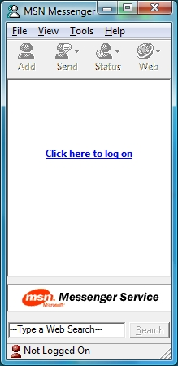
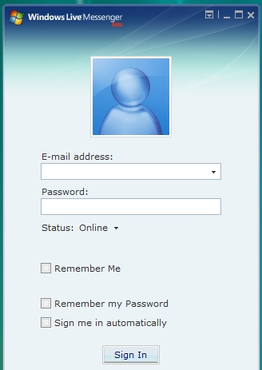

O MSN ou The Microsoft Network, foi um site de comunicação formal e informal dentre seus usuários, lançado na World Wide Web em 24 de Agoste de 1995 pela Microsoft utilizando linguagem "ASP.NET".

O proposito do site inicialmente se tratava de de troca de emails entre os usuarios, tanto para uso comercial e pessoal, com o passar dos anos e o avanço da tecnologia foram feitas modificações que melhoram o uso e interface do programa.
Nos anos 2000, o MSN após melhorias inovou trazendo comunicação por chat e video à distância, pelo uso popular na época havia problemas de conexão e diversas quedas durante o uso do programa, em alguns casos nem era ser capaz de realizar o login
O MSN atualmente não trabalha só com mensagens por chat e video, mas como uma rede de serviços de comunicação da Microsoft divulgando Revistas, Noticias, Clima e Horóscopo. Uma forma do qual o MSN poderia chamar atenção do Publico Jovem da Periferia é pesquisando os temas mais populares entre esse publico e divulgando no site e apoiando a discussão via mensagens chats ou video